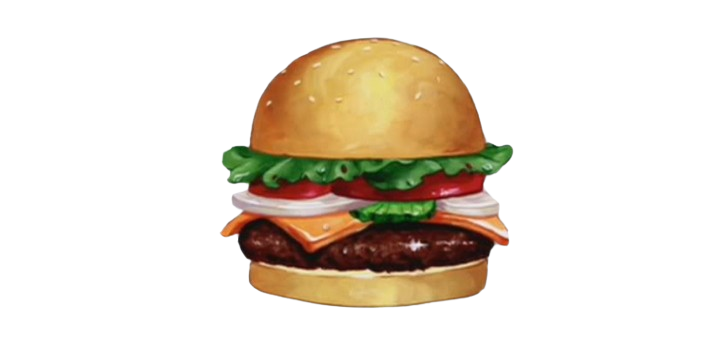

Krabby Patty adalah burger legendaris dari restoran terkenal Krusty Krab di Bikini Bottom. Burger ini terkenal karena rasanya yang unik, resep rahasia, dan kualitas bahan terbaik yang membuatnya menjadi makanan favorit para pelanggan.
Dibuat dengan roti lembut, daging berkualitas, sayuran segar, dan saus rahasia Krusty Krab, Krabby Patty telah menjadi ikon kuliner yang tidak tergantikan.
